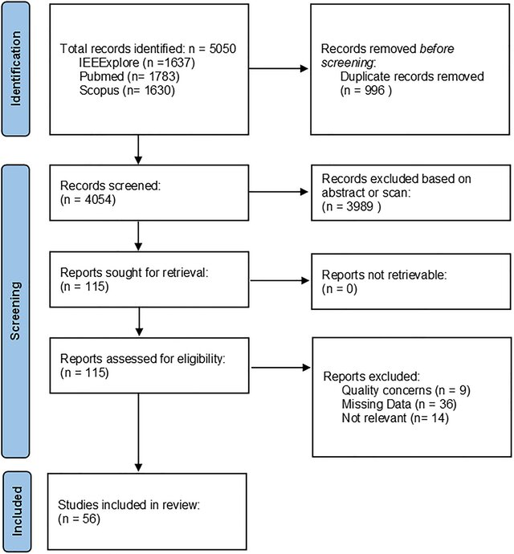
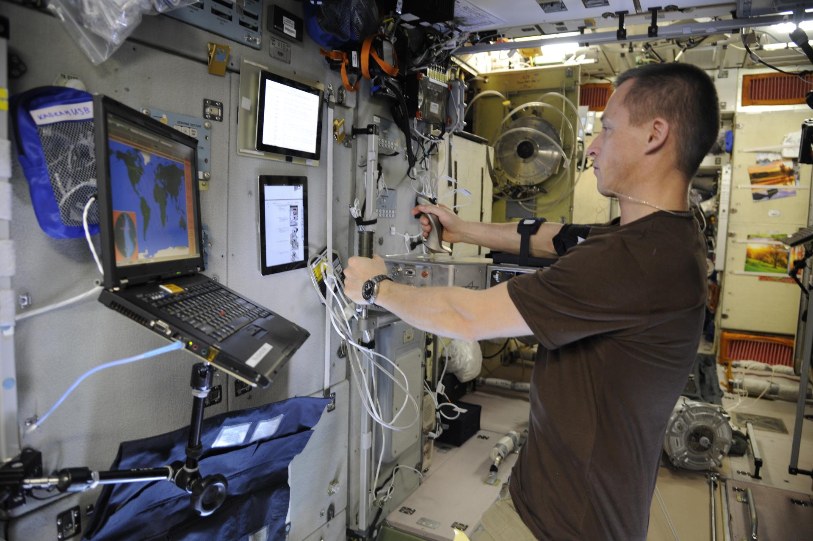
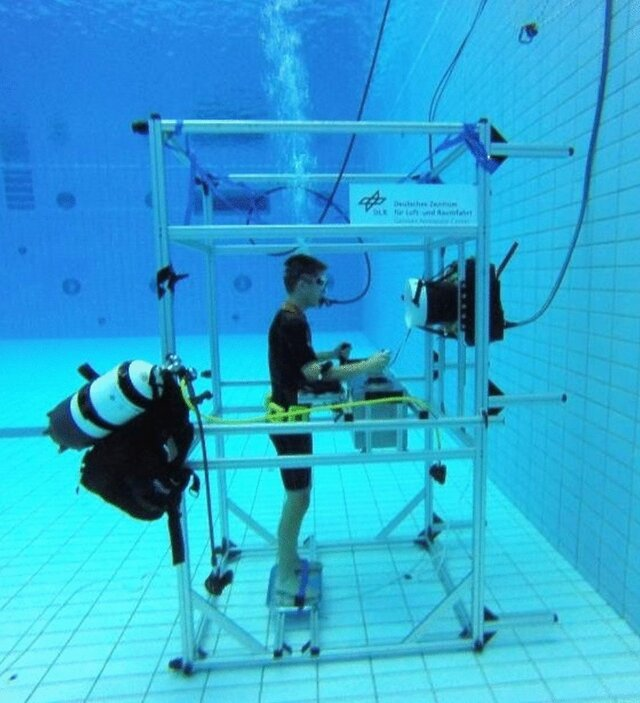
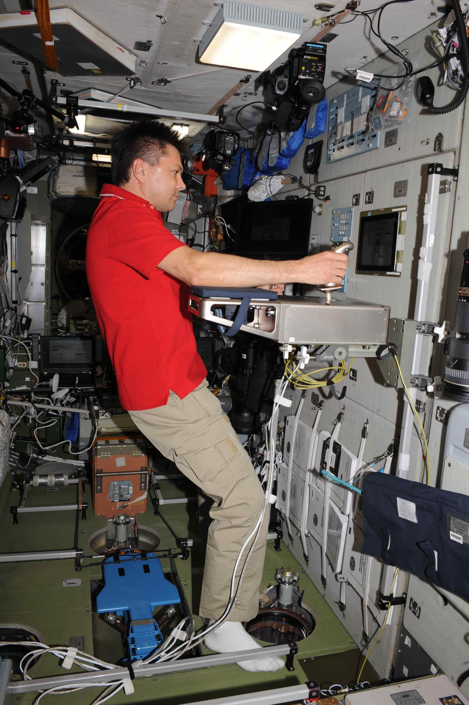

📚 Featured Publications
Selected research publications from my work:

Human limb position sense measured by repositioning during changes of gravity in parabolic flight
Authors: Bernhard Weber, Michael Panzirsch, Harsimran Singh, Uwe Proske
Journal: Scientific Reports, 2025
DOI: 10.1038/s41598-025-23941-9
Keywords: Position sense, Proprioception, Microgravity, Hypergravity, Parabolic flight

The benefits of haptic feedback in robot assisted surgery and their moderators: a meta-analysis
Authors: Max Bergholz, Manuel Ferle, Bernhard Weber
Journal: Scientific Reports, 2023
DOI: 10.1038/s41598-023-46641-8
Keywords: Haptic feedback, Force Feedback, Tactile Feedback, Telerobotics

Aiming performance during spaceflight: Individual adaptation to microgravity and the benefits of haptic support
Authors: Bernhard Weber, Simon Schätzle, Martin Stelzer
Journal: Applied Ergonomics, 2022
DOI: 10.1016/j.apergo.2022.103791
Keywords: Microgravity, Sensorimotor Performance, Haptic devices, Force Feedback

Sensorimotor performance and haptic support in simulated weightlessness
Authors: Bernhard Weber, Michael Panzirsch, Freek Stulp, Stefan Schneider
Journal: Experimental Brain Research, 2020
DOI: 10.1007/s00221-020-05898-5
Keywords: Aerospace Simulation, Weightlessness, Water Immersion, Sensorimotor Performance, Haptic interfaces, Force Feedback

Teleoperating Robots from the International Space Station: Microgravity Effects on Performance with Force Feedback
Authors: Bernhard Weber, Ribin Balachandran, Cornelia Riecke, Freek Stulp, Martin Stelzer
Proceedings: IROS, 2019
DOI: 10.1109/IROS40897.2019.8968030
Keywords: Spaceflight, Telerobotics, Sensorimotor Performance, Haptic interfaces, Force Feedback
📢 All publications and further details are available on my ResearchGate profile 🔗